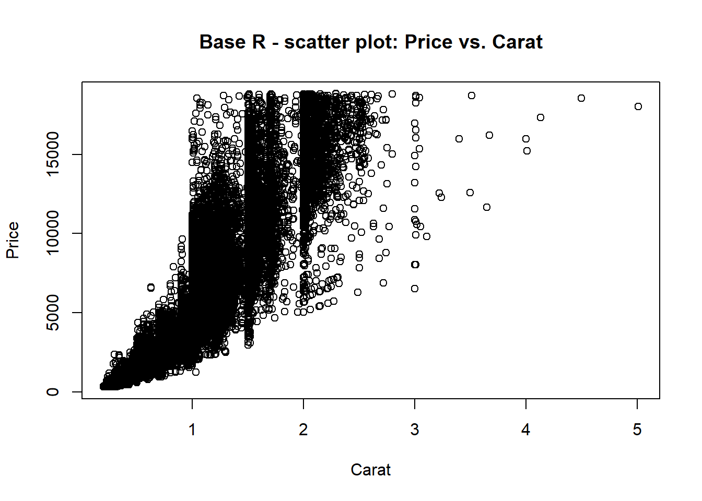
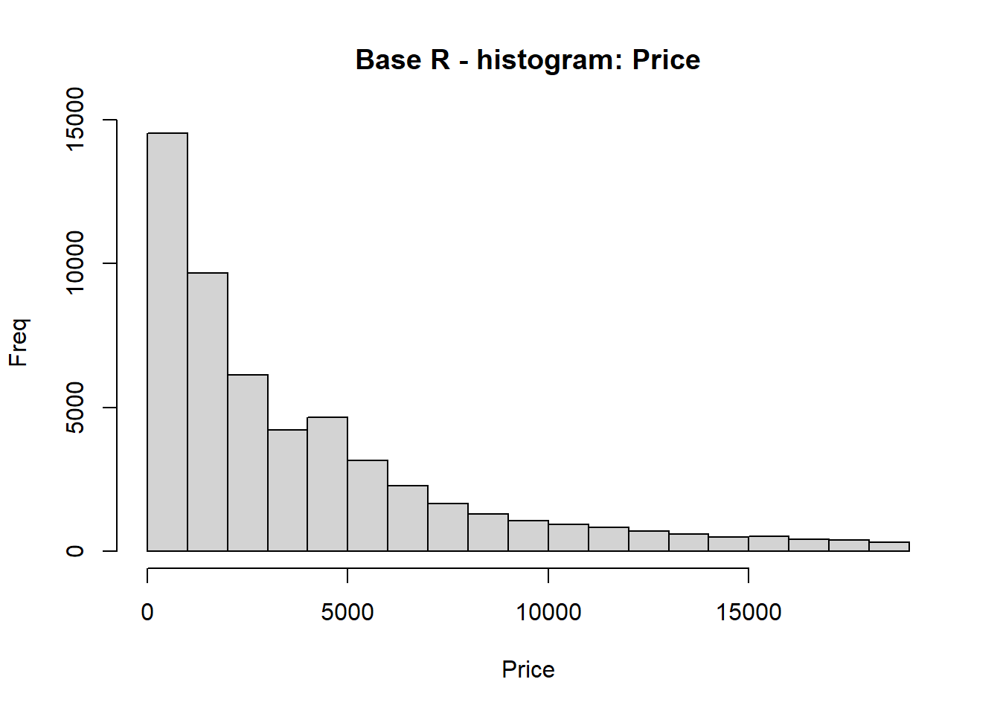
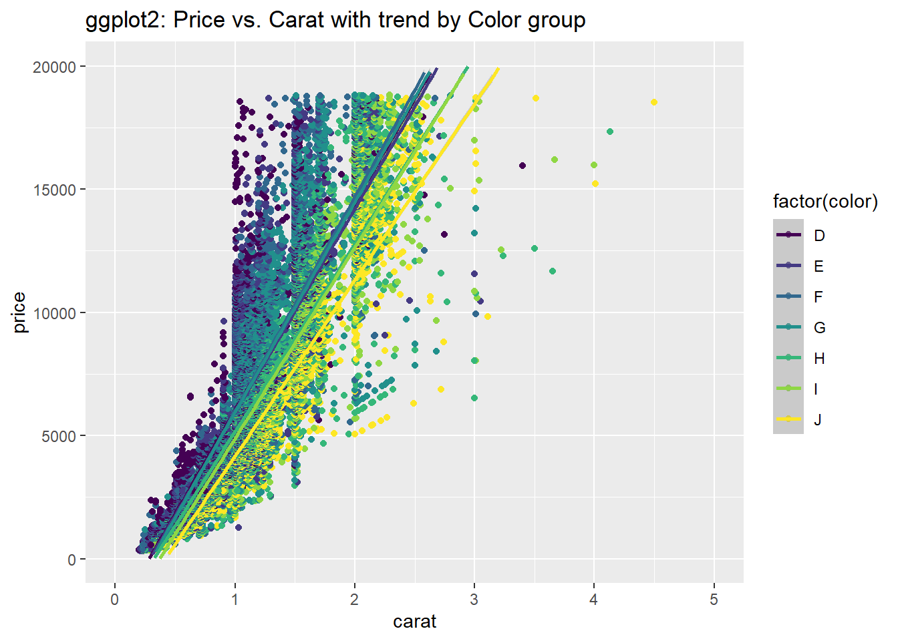
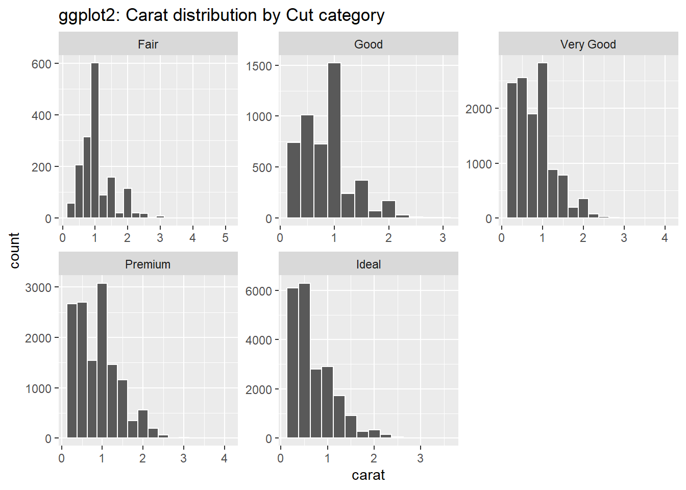

Base R Graphics provides the most fundamental, low-level control/functions, building plots incrementally. This comes at the cost of minimal-code efficiency. Customization is done via arguments passed to functions or through global par() settings, which are not plot-specific. Achieving a publication-quality base plot is possible but requires a high degree of manual customization (requiring many separate function calls and manual placement of elements), which can be difficult to replicate. There is no native support for faceting, we must manually manage plotting with par(mfrow) and loops, which is challenging for complex multi-panel arrangements.
#Create at least two plots using base R functions:library(ggplot2)data("diamonds")myDF<-diamonds#Base R plot() functionplot(myDF$carat,myDF$price,main="Base R - scatter plot: Price vs. Carat",xlab="Carat",ylab="Price")

#Base R hist() functionhist(myDF$price,main="Base R - histogram: Price",xlab="Price",ylab="Freq")

Task # 2 - Lattice Graphics
Lattice Graphics provides different control/functions, with formula-based syntax, which is different from the function based approach in base R. The shift from an incremental to an object-based workflow is challenging given the learning curve. In lattice, we define the entire plot at once, unlike the stepwise construction in base R. Customization is complex; high-level functions handle most instructions, however, fine-tuning requires more specialized panel functions and par.settings. Lattice functions let us view information and relationships between different attributes in single/multi window grid. Lattice is designed for faceting using the formula ‘y~x,z’ a strength of the package/library.
#Use the lattice package to produce conditioned or multivariate plots:library(lattice)# Conditional scatter plot (small multiples)xyplot(price ~ carat |factor(clarity),data = myDF,main ="Lattice: - Conditional scatter plot: Price vs. Carat by Clarity")
ggplot2 is by far my favorite and is arguably regarded as the best system for producing publication-quality output with minimal code. While offering simple, effective defaults, ggplot2 also provides extra control over every aspect of the plot through scales, and layer modifications. You build plots by adding layers with the + operator, where each layer controls a specific part of the graphic. As demonstrated below, ggplot() objects are highly customizable via layers, labels, and scales.
#Use ggplot2’s grammar of graphics to create layered visuals:library(ggplot2)# Scatter plot with smoothingggplot(myDF,aes(x=carat,y=price,color=factor(color))) +geom_point() +geom_smooth(method ="lm") +ylim(c(0,20000)) +xlim(c(0,5)) +labs(title ="ggplot2: Price vs. Carat with trend by Color group")

# Faceted histogramggplot(myDF,aes(carat)) +geom_histogram(binwidth =0.25,color="white") +facet_wrap(~ cut,scales="free") +labs(title ="ggplot2: Carat distribution by Cut category")

One thing I found surprising is in regards to compatibility. ggplot2 and base R graphics are built on different underlying systems; Grid vs. Graphics, making it difficult to combine elements from both approaches on a single plot. I figured this out at first while attempting to use functions, variables, arguments, and techniques that I learned in one package within another.
{kind=link}